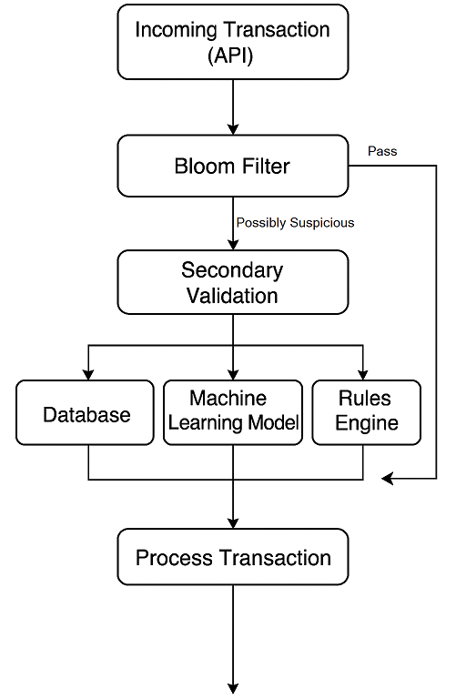
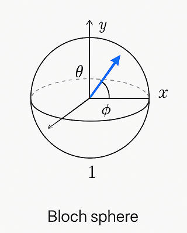
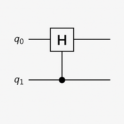
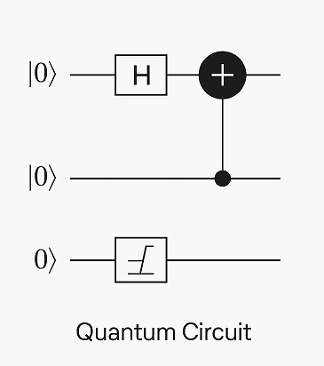
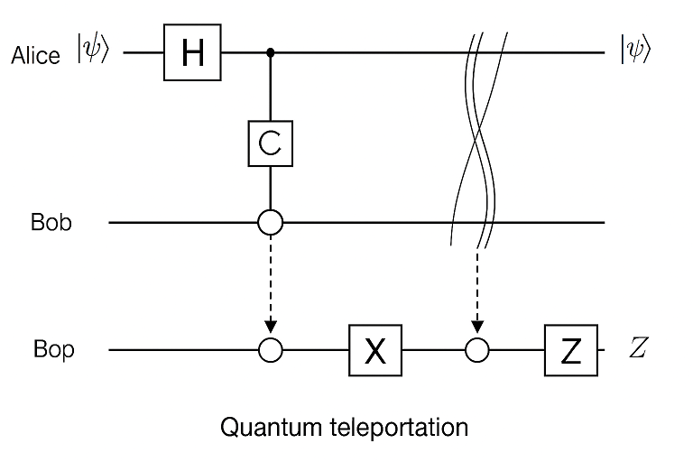

Glossary
You will find a myriad of jargon, acronyms and product or tool names used both in technical documentation and social media discussion of the Boost C++Libraries and C++ development in general. This section contains descriptions of the most common.
You will find well known acronyms such as DLL, URL and UUID in this list, because they also refer to Boost libraries of the same name.
Where terms apply specifically to one technology, such as Quantum Computing or Safe C++, many of the specific terms are only listed under the entry for that technology.
A
ABI : Application Binary Interface
Abseil : Abseil is a collection of C++ libraries, developed by Google (drawn from it’s codebase), and designed to be compatible with the C++ Standards.
ADL : Argument-Dependent Lookup
AFAICT : As Far As I Can Tell
AFAIK : As Far As I Know
Antora : An open-source documentation site generator built around AsciiDoc, designed for managing and publishing large, multi-repository documentation collections. It produces modular, versioned, and navigation-rich websites, making it especially popular for technical docs and developer portals.
AppVeyor : A cloud-based Continuous Integration (CI) and Continuous Delivery (CD) service. It’s similar to GitHub Actions, Travis CI, or CircleCI, but with some unique strengths, such as it is a hosted service so you don’t need to set up your own build servers, it has a Windows-first focus (originally designed to fill a gap when most CI services were Linux-only), and is great for testing MSVC builds, PowerShell scripts, and Windows installers. It does now also support Linux and macOS. It integrates well with GitHub and uses YAML configuration files.
ASIO : Asynchronous Input/Output - refer to Boost.Asio
AST : Abstract Syntax Tree - a data structure used in compilers to represent the structure of code in a hierarchical, tree-like form. It’s a crucial intermediate step in parsing code for tasks like analysis, compilation, and optimizations. See also, Multiple Dispatch.
ATM : At The Moment
B
BBK : Badly Broken Keyboard - describing terrible code or debugging issues
BFS : Breadth-First Search
Bikeshedding or BS : Focusing on trivial issues
Binding : The process of associating identifiers (like variables or functions) with values, types, or memory locations — can be static or dynamic. Static binding occurs at compile time (the compiler knows exactly which function to call). Dynamic binding happens at runtime — the decision about which function to call is deferred until the program runs (often using virtual tables ).
Bloom Filter : A space-efficient, fast, and probabilistic structure that can tell you if an item is definitely not in a database or is possibly in the database. For example, say you have a database of bad actors that is used to help prevent fraudulent access to a financial web app. A bloom filter can be used to tell if a new transaction definitely does not come from this set, so proceed normally, or possibly comes from this set in which case a deeper investigation into its validity (a full search of the bad actors) should be carried out. The following diagram shows the flow of control:

Bloom filters are stealthy players in many performance-critical applications. They’re used in areas where fast lookups, limited memory, and tolerable false positive rates are acceptable. Blacklisted entity checks (fraud detection, compliance with sensitive data) is a top contender - other uses include:
-
High-frequency trading, to track recent orders or trades to avoid duplicate processing.
-
In URL, File or Query caches, to reduce IO and memory overhead by quickly testing if a URL/File/Query has been visited (cached) already.
-
Database engines, to avoid unnecessary disk reads during key lookup - anything to avoid a full-text search.
-
Bioinformatics, to reduce the number of comparisons between huge DNA sequences.
Databases used with bloom filters have the entries hashed (see Hash Functions ) before they are stored.
The Boost.Bloom library was released with Boost 1.89.0.
- Note
-
The Bloom filter is named after its inventor, Burton Howard Bloom, who described its purpose in a 1970 paper - Space/Time Trade-offs in Hash Coding with Allowable Errors.
BOFH : B’d Operator From Hell - referring to a grumpy system admin
BOGOSITY : A measure of how bogus something is - typically bogus code or bogus logic
Brave : An open-source, Chromium-based browser. Brave is a fork of Chromium, which itself is mostly written in C++. The Blink rendering engine, V8 JavaScript engine, and much of the browser’s core (networking, storage, DOM, etc.) are implemented in C++.
BSOD : Black Screen of Doubt (usually slang, tongue-in-cheek) - developer hesitation to trust AI-generated code because of uncertainty about hidden bugs or security risks.
BTW : By The Way
BUGS : Bots Unleashing Garbage Software - used to describe the natural by-product of copy-pasting AI snippets.
C
CICD (CI/CD) : Continuous Integration and Continuous Deployment (or Delivery). CI refers to the practice of automatically integrating code changes into a shared repository, where each change is verified by automated builds and tests. CD extends this process to automatically deploy or deliver new code to production environments. Refer to Contributor Guide: Continuous Integration.
CHAOS : Code Helped Along, Obviously Shaky - AI suggestions that compile but crash spectacularly.
CML : Can mean CMake Language, Conversion Markup Language, Configuration Menu Language, Concurrent ML (a high-level language for concurrent programming) - depending on context.
CoT : Chain of Thought - a reasoning technique where an AI “thinks out loud,” useful for debugging or explaining coding decisions.
CppFront : a project created by Herb Sutter, which is a syntax experiment for C++. It’s designed as a front-end tool to make C++ more modern and easier to use by offering a simpler syntax that translates into standard C++ code. Essentially, it’s a transpiler for a modernized dialect of C++.
CRC : Cyclic Redundancy Code - refer to Boost.Crc
CRTP : Curiously Recurring Template Pattern
CSS : Cascading Style Sheet - defines the styles used in HTML web pages.
CUDA : CUDA originally stood for Compute Unified Device Architecture though is now generally used as a name for a parallel computing platform, language and API. For more information, refer to CUDA Toolkit.
CYA : Cover Your Automation (semi-sarcastic acronym) - a reminder that AI outputs must be validated, tests must run, and responsibility still falls on the human developer.
D
DDS : Data Distribution Service
DFL : Do not Fix Later - used sarcastically pointing out procrastination on fixing bugs
DFS : Depth-First Search
DLL : Dynamic Link Library - also refer to Boost.Dll
DOA : Deploy On Arrival when management insists the first draft goes live
DOCCA : A set of XSLT transformations that convert Doxygen XML extracted from Javadoc comments in C++ source code, into Boost.Quickbook output.
Drone : A continuous integration (CI) and delivery platform that automates the build, test, and deploy stages of a software pipeline. It is container-based and integrates with various version control systems, supporting multiple languages and environments - refer to Contributor Guide: Continuous Integration.
DRY : Don’t Repeat Yourself
E
ELF binary : refers to a file that follows the Executable and Linkable Format (ELF), which is a common standard file format for executables, object code, shared libraries, and core dumps on Unix-like operating systems such as Linux. ELF supports advanced features like dynamic linking, which is useful for shared libraries. Tools like gdb (the GNU Debugger) can use the debug symbols and information stored in ELF binaries to provide insights during debugging sessions.
EVP :
-
Used in cryptography, particularly in OpenSSL, where EVP stands for Envelope. It is used to refer to high-level cryptographic functions in the OpenSSL library, such as encryption, hashing, and signing. C++ programs using OpenSSL for cryptographic operations might use the EVP APIs.
-
Enhanced Vector Processing : in high-performance computing contexts, EVP might refer to techniques that leverage vectorization or SIMD (Single Instruction, Multiple Data) for improving computational performance. It relates to libraries or frameworks that optimize algorithms using vectorized processing.
EVP_MD_CTX : Envelope Message Digest Context - part of OpenSSL’s high-level cryptographic library and is used to manage the context for performing message digest (hashing) operations. The EVP API provides a high-level and flexible interface, allowing developers to use a consistent set of functions for various cryptographic algorithms without being tied to a specific implementation.
F
FAKE : Fabricated Algorithms, Knowledge, and Examples - when a developer or AI “cites” StackOverflow answers it made up.
FarmHash : Google developed FarmHash as a family of non-cryptographic hash functions, designed to be fast on modern CPUs (both 32-bit and 64-bit), deterministic (same input results in the same output), well-distributed (low collision rate for typical data), but non-cryptographic (not secure against intentional collisions, so it should not be used for passwords, signatures, or security tokens). Good for hash tables, checksums, data partitioning, bloom filters, or fingerprinting content where cryptographic security isn’t required. See Hash Functions.
FIFO : First In, First Out
FIM : Fill-in-the-Middle - a coding-specific AI technique where the model predicts the missing part of code between known “prefix” and “suffix.”
FOMO : Fear Of Missing Out
FOOBAR or FUBAR : Fed Up Beyond All Recognition
FPU : Floating Point Unit
FSM : Finite State Machine
FUD : Fear, Uncertainty, and Doubt
FWIW : For What It’s Worth
G
GCC : GNU Compiler Collection - a popular open-source compiler that supports C++, and it is frequently mentioned in discussions about toolchains, performance optimizations, and cross-platform development.
GDB : Often used as short for GNU Debugger, though can mean Graph Database.
Generative AI : A field of Artificial Intelligence (AI) that works by first breaking down known constructs (for example, text or images) into small reusable components. This might be tokens, subwords, or characters for textual input, or pixels, patches, or semantic elements (sky, tree, car, etc.) for an image. Then, using statistical models, patterns, or learned rules, generative AI assembles these atomic components into something new, ideally in novel and interesting ways, based on user input. Generative AI has borrowed many terms from everyday English, but repurposed them with specific technical meanings, for example:
| Term | AI Meaning |
|---|---|
Attention |
A mechanism that lets models weigh the importance of different input parts dynamically. |
Beam Search |
A decoding algorithm that keeps top candidate sequences during generation. |
Bias |
Model parameters or training data patterns that skew outputs in certain directions. |
Gradient Clipping |
A technique used during training neural networks to prevent exploding gradients by limiting their size. |
Hallucination |
When a model confidently outputs false or fabricated information. For example, with the question "What is the capital of Mars" the model confidently responds "Obviously, Olympus Mons"! |
Latent Space |
A compressed, abstract representation of data in machine learning models, where relationships between data points can be more easily explored. |
Loss |
A numerical measure of how wrong a model’s predictions are during training. |
Overfitting |
When a model learns the training data too well, including the noise, and fails to generalize to new data. |
Prompt |
The input text given to a generative model to guide its response. |
Prompt Injection |
A security vulnerability where a user sneaks malicious or unintended instructions into an AI’s prompt, causing it to misbehave. |
Sampling |
Selecting outputs probabilistically from a distribution of next-token predictions. |
Temperature |
A parameter controlling randomness in output sampling: low = deterministic/boring, high = random/chaotic. |
Token |
A unit of text, like a word or subword, that a model processes. |
Token Embedding |
A numeric representation of words or subwords that captures their meaning and context, used as input to AI models. |
GH : Usually means GitHub.
GHA : Short for GitHub Actions.
GIL : Generic Image Library - Boost.Gil is a library designed for image processing, offering a flexible way to manipulate and process images.
Grapheme Cluster : The smallest unit of text that a user perceives as a single character, even though it may actually consist of multiple Unicode code points. This is important to represent languages like Hindi, Thai, Korean, Japanese, and others.
gRPC : A high-performance, open-source RPC (Remote Procedure Call) framework developed by Google that uses Protocol Buffers (protobuf) for defining service interfaces and message types. It enables efficient, strongly-typed communication between distributed systems over HTTP/2, supporting features like streaming, authentication, and load balancing. It is a competitor to a point of REST and OpenAPI.
H
Handlebars : Handlebars is a templating language used to generate text (HTML, JSON, config files, source code, etc.) by combining a template with data.
You write placeholders like {{name}} or conditionals like {{#if active}}, and the engine replaces them with values at runtime. The original Handlebars was a JavaScript project, though developers have found the C++ port useful for code generation, report and config file creation, embedding HTML or JSON templates, and web server frameworks that render dynamic pages.
The Handlebars concept works well with Boost.Json as it integrates easily with data-driven templates, Boost.PropertyTree to represent hierarchical data, Boost.Spirit to parse templates into an internal format, Boost.Filesystem to load and organize templates from disk, among many other use-cases. More advanced work might involve Boost.Beast to render dynamic web pages, Boost.Process to generate config files for subprocesses, and Boost.ProgramOptions to feed runtime configuration into templates.
Mustache is the lightweight, portable ancestor of Handlebars.
Hash Functions : A hash function takes a string and converts it into a number. Often used in fraud detection to store details such as: email addresses (normalized/lowered), credit card fingerprints (not full PANs as this might expose sensitive data, usually the last four digits or a tokenized version of the numbers), device IDs, IP and user-agent strings, phone numbers (E.164 format), and usernames / login handles. Once hashed, these numbers can be stored in a database and searched for patterns to create Bloom Filters (to detect fake accounts) as well as searched on a per-item basis. Commonly used hash algorithms include:
-
MurmurHash3 / MurmurHash2, which is fast, multithreaded, but non-cryptographic. It has excellent avalanche properties (small input changes can lead to big output changes) and is used in many real-time systems due to speed and low collision rate. Redis Bloom, Apache Hadoop, and Apache Hive use it for sketch-based analytics.
-
CityHash / FarmHash, developed by Google and optimized for short strings and performance on modern CPUs. Useful for hashing things like IP addresses, usernames, or device IDs. FarmHash is a successor to CityHash with better SIMD support.
-
FNV-1a / Fowler-Noll-Vo, is super simple and fast, and often used when a lightweight, deterministic hash is needed. It is low-quality for cryptographic purposes, but fine for many Bloom Filters.
-
xxHash is an extremely fast, modern non-crypto hash function that is gaining popularity in streaming analytics and fraud pipelines. Great choice when you’re hashing millions of records per second.
-
SHA-512 / SHA-256 / SHA-3 are cryptographic hashes, developed by the NSA and published by NIST in 2001. SHA simply stands for Secure Hash Algorithm. They are slower than non-cryptographic hashes, but resilient to collisions and attacks. Often used in fraud systems when storing user personal information (emails, phone numbers) in a filter, and you need to protect against reverse-engineering the filter contents.
The following shows an example of a string hashed with the SHA-256 algorithm:
Email: fraudster@example.com
SHA-256 Hash: 0a89310b6c5fc95e6fcb53a19ad4d80d65cf63d1870076859ec79dc21d1c47f2Terms related to hashing include:
-
Fingerprint - a combination of strings that are hashed as one - for example:
SHA-256(email + deviceID + timestamp). -
PCI DSS Compliance - the Payment Card Industry Data Security Standard (PCI DSS) which strictly regulates the handling of credit card PANs.
-
Rainbow Tables - precomputed databases of common inputs and their hash values, used by attackers to quickly reverse hashes by looking up matches instead of computing them.
-
Salting - the process of adding a unique, random value to input data before hashing it, to prevent attackers from using precomputed hash tables (like rainbow tables) to reverse-engineer the original input.
- Note
-
For uses of hash functions in Boost libraries, refer to Boost.Hash2, and Boost.Bloom.
HCF : Halt and Catch Fire - a bug that crashes everything, usually exaggerated
HITL, HITR : Human in the loop or Human in the Review - referring to human engagement in an AI process
HOF : High-Order Functions - refer to Boost.Hof
HRT : High-Resolution Timer - a high-resolution timing mechanisms used in C++ for precise measurements of time, especially in performance profiling and real-time systems.
HSM : Hierarchical State Machine - used in designing state machines in software development, often in real-time systems or simulations.
I
ICE : In-Context Examples - supplying code snippets or project context so that an AI produces relevant suggestions instead of generic ones.
ICL : Interval Container Library - refer to Boost.Icl
ID10T : Idiot - pronounced "ID-ten-T" (user errors)
IDEs : Integrated Development Environments
IIUC : If I understand correctly
IIRC : If I remember correctly
IMO or IMHO : In My (Honest or Humble) Opinion
INCITS : The InterNational Committee for Information Technology Standards is the central U.S. forum dedicated to creating technology standards for the next generation of innovation.
IO : Input/Output - refer to Boost.Io
IOW : In Other Words
IR : Intermediate Representation - an internal representation of code or data.
IWBNI : It Would Be Nice If - a feature request is a dream
IWYU : include-what-you-use - a tool for use with Clang to analyze #includes in C and C++ source files.
J
Jamfile : A plain text configuration file that describes how to build a project using Boost.Build (B2). The file defines targets (executables, libraries, tests), specifies sources, include paths, compiler/linker options, and dependencies, and uses a high-level declarative syntax (not low-level Makefiles). The file is typically named Jamfile or Jamfile.v2.
Jinja or Jinga2 : Jinga is a popular Python text template engine. Jinga2C++ is a modern C++ implementation of Jinga.
JNI : Java Native Interface - a framework that allows C++ code to interact with Java code. JNI is relevant when integrating C++ components into Java applications, especially in cross-language development.
JIT : Just-In-Time (Compilation) - while JIT compilation is more commonly associated with languages like JavaScript or Java, it is occasionally discussed in the context of C++ when talking about optimization techniques, runtime compilation, or performance-critical applications. Some C++ libraries (e.g., LLVM) support JIT compilation features.
K
K8s : The Kubernetes container orchestration system
KDE : The K Desktop Environment (a Linux graphical environment)
KISS : Keep It Simple, Stupid
KPI : Key Performance Indicator
KVM : Kernel-based Virtual Machine
L
LEAF : Lightweight Error Augmentation Framework - refer to Boost.Leaf
LGTM : Looks Good To Me - often used in code reviews to signal approval
LIFO : Last In, First Out
LLVM : Initially this stood for Low Level Virtual Machine but is now no longer considered an acronym. LLVM is now the name for a set of compiler and toolchain technologies that support the development of a frontend for any programming language and a backend for any processor architecture. It is written in C++.
LOL : Laughing Out Loud or Lots of Logs
LOPS Lack Of Programmer Skill - used humorously when a problem is tricky to debug
LSP :
-
Liskov Substitution Principle - states that objects of a derived class should be able to replace objects of the base class without affecting the correctness of the program, ensuring that a subclass can stand in for its superclass without altering expected behavior.
-
Language Server Protocol - a standard protocol used for communication between code editors/IDEs (like VS Code) and programming language tools (like compilers or linters). It’s designed to enable features like autocomplete, go-to-definition, and refactoring.
M
MDS :
-
Meltdown Data Sampling : in the context of system security and CPU vulnerabilities, MDS refers to a family of side-channel attacks that target weaknesses in modern CPU architectures. These attacks can potentially leak sensitive data through speculative execution flaws, similar to vulnerabilities like Meltdown and Spectre.
-
Modular Design Structure : sometimes used to describe a software design methodology in which systems are broken down into modules, allowing for separation of concerns and better maintainability.
-
Multiple Data Streams : a more abstract term, refers to scenarios where an application handles multiple data streams simultaneously, possibly in a parallel or distributed environment.
MFW : My Face When - used humorously or sarcastically depending heavily on the accompanying context or image.
MIR, MLIR : Mid-level Intermediate Representation - an intermediate form of code that is generated by the compiler during the compilation process, designed to be easier for the compiler to analyze and optimize. In particular, this mid-level code aids with Borrow Checking, incremental compilation and ensuring safety (type, memory, etc.) issue.
MOC : In the context of Qt and C++, this refers to the Meta-Object Compiler - a tool that processes Qt’s extensions to C++, such as signals and slots (a mechanism for event-driven programming) and other meta-object features (like introspection and dynamic properties). The MOC generates additional C++ code that enables these features to work seamlessly.
Molecular Modeling : the process of simulating the behavior of atoms and molecules. This domain is packed with terms that sound totally ordinary (or even friendly) but mean something extremely technical, counter-intuitive, or unintentionally hilarious once you know the truth:
-
Coarse Graining : Replacing groups of atoms with fake blobs to survive computationally, or "Physics was too expensive so we squinted".
-
Docking : Guessing how two molecules might awkwardly stick together. Cynically, "We tried 10 million wrong poses and picked the least bad one".
-
Energy Minimization : Nudging atoms until the molecule stops screaming numerically.
-
Force Field : A big pile of equations pretending to be physics.
-
Free Energy : A brutally hard quantity requiring weeks of simulation and graduate student suffering.
-
MD : Molecular Dynamics, or running Newton’s laws on millions of atoms for weeks to watch them jiggle.
-
RMSD : Root Mean Square Deviation, or how different is this molecule from that molecule, really, or "Your protein folded wrong again".
-
Sampling : Exploring a near-infinite configuration space and praying you didn’t miss the important parts, or perhaps "We simulated 2 microseconds and still learned nothing".
-
Solvation : Dumping your sim molecule into pretend water.
-
Wet Lab, Dry Lab : A Wet lab is pipettes, cells, chemicals, spills, whereas a Dry lab is probably a supercomputer melting GPUs.
MPI : Message Parsing Interface - refer to Boost.Mpi
MPL or MP11 : Metaprogramming Libraries - refer to Boost.Mpl and the later Boost.Mp11
Multiple Dispatch : Refers to the ability of a function or method to dynamically select its implementation based on the runtime types of multiple arguments, rather than just the type of the receiver (this) or a single argument. While C++ natively supports single dispatch (via virtual functions), it does not have built-in multiple dispatch like some languages (for example, Julia or Common Lisp). However, it can be emulated in C++ using design patterns like the visitor pattern, double dispatch, or external libraries. This technique is useful when the behavior of a function genuinely depends on the combination of several objects' dynamic types - for example, a complex collision between multiple object types. See Open Methods.
-
Single Dispatch is the most common form of dispatch in C++ and many languages — it means that the method or function to call is determined only by the type of the first (usually the calling) object at runtime, typically using virtual functions. For example, when you call
shape→draw(), thedraw()method selected depends only on the runtime type of shape, not on the types of any other arguments. -
Visitor Pattern : a design pattern that lets you separate an algorithm from the objects it operates on — by letting you “visit” objects and perform operations on them without modifying their classes. It allows you to add new operations to a group of existing object types without changing those types, by defining a
Visitorclass that implements the operation for each type. It’s commonly used to achieve double dispatch and to apply operations across complex object structures like trees or ASTs.
Mustache : Mustache is a logic-less templating language, originally designed for generating text files (like HTML, JSON, config files). It’s called "logic-less" because it avoids embedded control structures or code. That makes it ideal for clean separation between code and output, template portability across languages (same Mustache template can work in C++, Python, or JavaScript), and easy embedding in low-level applications.
Mustache is a similar but simpler alternative to Handlebars.
Mutation : Modifying the state of an object or variable in place (for example, altering a list rather than creating a new one). The opposite of mutation is immutable - once created, the object’s value cannot be changed — any modification produces a new object instead.
MVP : Model-View-Presenter
N
NDA : Non-Disclosure Agreement
NIMBY : Not In My Back Yard - when a programmer doesn’t want to deal with a particular issue
NLL : Non-Lexical Lifetimes - an NLL borrow checker in the Rust language that uses a more precise, dataflow-based analysis to determine when a borrow starts and ends, based on the actual usage of the variables. This allows for more flexible and intuitive borrowing rules.
Normalize :
-
When working with strings, transforming strings into a canonical form so comparisons work as expected. Used heavily in Unicode and filesystem paths, for example: "é" can be stored as one code point or two; normalization makes them match. There are several normalization strategies:
-
NFC : Normalized Form C (Canonical Composition) - characters are converted to canonical equivalents and then composed into pre-combined forms when possible. For example: e + ◌́ → é (U+0065 U+0301 → U+00E9).
-
NFD : Normalized Form D (Canonical Decomposition) - characters are decomposed into base characters and combining marks. For example: é → e + ◌́ (U+00E9 → U+0065 U+0301)
-
NFKC : Normalization Form KC (Compatibility Composition) - converts characters to their compatibility equivalents, then composes them. For example, “①” → “1”.
-
NFKD : Normalization Form KD (Compatibility Decomposition) - converts compatibility characters to their equivalents and decomposes them. For example: “㍿” (Japanese corporate sign) → “株式会社”.
-
Use NFC for most applications. Consider NFKC or NFKD for search engines, security checks, deduplication. Consider NFD for low-level linguistic processing.
-
In mathematics, adjusting values in a dataset to a common scale. Vectors are often normalized so that they represent a single unit in any direction.
NTTP : Non-Type Template Parameter
O
Odeint : Ordinary Differential Equations (Initial) - a library for solving initial value problems of ordinary differential equations, refer to Boost.Numeric/odeint
OOB : Out of Bounds or Out of Band - meaning irrelevant
OOP : Object-Ori
Open-Methods : Refers to a language mechanism that allows you to define new behaviors (essentially, methods) for existing types without modifying those types. C++ doesn’t natively support open methods in the way that some dynamic languages (like Common Lisp) do. Keys to the purpose of open methods are the Open/Closed Principle (OCP) - where a software entity (class, module, function, etc.) should be open for extension but closed for modification - and multiple dispatch. In single dispatch method resolution is based on the runtime type of a single object, usually the one the method is called on. With multiple dispatch method resolution is based on the runtime types of two or more arguments. C++ supports single dispatch via virtual functions, Multiple Dispatch has to be simulated and typically coded into a library.
The main advantage of open methods is that they help prevent bugs when modifying stable code. For example, when a new file format becomes popular, code can be extended to support it without modifying the existing code. In simple terms, they allow for safer scaling of software. Another specific use is you can add behavior involving multiple types, for example adding collision handling between type A and type B that is to date unsupported in your code.
An open-method library is currently in the Boost formal review process.
OTOH : On the other hand
P
PEBKAC : Problem Exists Between Keyboard And Chair - user error
PFR : A library to perform basic reflection - refer to Boost.Pfr
Phi Function : a construct used in Static Single Assignment (see SSA) form to resolve multiple possible values for a variable when control flow converges in a program. It selects a value based on the control flow path taken to reach the convergence point. Phi functions are not visible to developers — they exist in the intermediate representation (IR) of compilers working with low-level code optimizations.
PICNIC : Problem In Chair, Not In Computer
PIMPL :
-
Pointer to IMPLementation
-
Perception Is My Lasting Principle - the "Cheshire Cat" idiom where someone’s perception of reality is subjective
Pinyin Order : A common system of sorting written Chinese based on the romanized pronunciation of the characters. Sorts characters like English words A through Z based on the Pinyin spelling and tone. This compares with Stroke Order - which sorts based on the number of strokes in the written character - and Radical Order - a sorting system based on the traditional Kangxi radicals. Pinyin ordering is common in dictionaries aimed at learners, phone books, and computer input systems.
PITA : Pain In The Application or Programmer In Trouble Again - difficult or frustrating code issue, such as when debugging AI-hallucinated functions.
POD : Plain Old Data
Polymorphism : In object-orientated programming, refers to having one common interface to an arbitrary set of specific types.
POSIX : Portable Operating System Interface
PPA : Personal Package Archive - a repository on Launchpad (a platform for Ubuntu software collaboration) that allows developers and maintainers to distribute software or updates that are not yet included in the official Ubuntu repositories.
PR : Pull Request - a request to include specified content into a GitHub repository. An administrator can accept or reject the PR.
Promotion : A compiler promotes a smaller type to a larger type so an operation can be done safely. For example:
int a = 42;
long long b = a; // promotion: int -> long longThe reverse ( a = b; ) is not a promotion, it would be an unsafe conversion. The key point is there is no danger of data loss in a promotion.
Q
QBK : Quickbook - a Boost tool for automated documentation, not to be confused with Intuit Quickbooks accounting software.
QED : "Quod erat demonstrandum" in Latin, which translates to "that which was to be demonstrated".
QML : Qt Meta Language - a declarative language used in conjunction with Qt for designing user interfaces. QML is commonly referenced in C++ discussions related to UI development in Qt.
QOI : Quite OK Image format - a relatively new image file format that aims to provide lossless image compression with a focus on simplicity and speed, sometimes used in performance-critical applications dealing with image processing.
QoS : Quality of Service - a concept that often appears in networking discussions, especially when C++ programs deal with real-time communications, distributed systems, or systems requiring specific performance guarantees.
Qt : This is a widely-used C++ framework for cross-platform GUI applications. While not an acronym, it’s often capitalized as Qt in discussions. Qt is known for its rich set of libraries and tools to develop not only graphical applications but also applications that require network handling, file I/O, and more.
Quantum Computing : Unlike classical computing based on bits which must have a value of 0 or 1, quantum computing is based on qubits that can exist in multiple states at the same time. Still in the research phase, this technology can dramatically improve the performance of certain algorithms - especially those we currently call "brute-force" computing - in fields such as cryptography, chemistry simulation, graph traversing, and no doubt many others as new algorithms are discovered. We can currently simulate quantum algorithms in C++ - refer to Quantum Computing. There is a mass of new terminology to grasp - many of which have completely different meanings outside of quantum computing - including:
-
Bloch Sphere : a geometric representation of a single qubit’s state as a point on the surface of a unit sphere, useful for visualizing superposition and phase.

The Bloch sphere is a 3D representation of a single qubit’s state. Any point on the sphere’s surface corresponds to a valid qubit state, with poles representing |0⟩ and |1⟩, and equatorial points representing equal superpositions. This tool helps visualize qubit transformations, such as rotations from quantum gates or decoherence effects over time.
-
Clifford+T Gate Set : a universal set of quantum gates that includes Clifford gates and the T gate, used to construct fault-tolerant quantum circuits. The Clifford gate is a type of quantum gate that forms a foundational set of operations used in quantum error correction and stabilizer circuits. The T gate is a single-qubit quantum gate that applies a π/4 phase shift to the |1⟩ state, making it essential for achieving universal quantum computation when combined with Clifford gates.
-
Decoherence : the process by which a quantum system loses its quantum properties (like superposition or entanglement) due to environmental interaction.
-
Entanglement : a quantum phenomenon where two or more qubits become linked, such that measuring one affects the state of the others, regardless of distance.

This shows a classic quantum circuit diagram demonstrating how to create an entangled pair of qubits (often called a Bell State). Qubit 0 (q₀) — starts in state |0⟩. Qubit 1 (q₁) — also starts in state |0⟩. A Hadamard Gate (H) is applied to q₀, which puts q₀ into a superposition: (|0⟩ + |1⟩) / √2. A CNOT gate is applied with q₀ as the control qubit, and q₁ as the target qubit. This entangles the qubits — their states become correlated. This means measuring q₀ as 0 forces q₁ to be 0, and measuring q₀ as 1 forces q₁ to be 1. Even if far apart, their outcomes are perfectly correlated — the hallmark of entanglement.
-
Hamiltonian : an operator representing the total energy of a quantum system, governing how its state evolves over time via Schrödinger’s equation.
-
Interference : arises from the wave-like nature of quantum states, allowing quantum algorithms to amplify correct answers while canceling out incorrect ones, enhancing computational efficiency.
-
Measurement : the act of observing a qubit’s state, which causes its wavefunction to collapse into a definite classical outcome (0 or 1).
-
Noisy Intermediate-Scale Quantum (NISQ) : A classification of current quantum devices with dozens to hundreds of qubits that are not yet error-corrected or scalable but still useful for experimentation.
-
QASM (Quantum Assembly Language) : a low-level language for describing quantum circuits and operations, often used to interface with quantum simulators and hardware.
-
Qubit : the basic unit of quantum information, capable of existing in a superposition of 0 and 1, unlike a classical bit which is strictly one or the other.
-
Qubit Connectivity (Topology) : the layout that defines which qubits in a quantum computer can directly interact, affecting how efficiently quantum circuits can be executed.
-
Qubit Decoherence Time (T1, T2) : T1 refers to how long a qubit holds its energy state (relaxation), and T2 refers to how long it maintains its phase (coherence) — both affect quantum stability.
-
Quantum Annealing : an optimization technique that finds the lowest-energy configuration of a system by slowly evolving its quantum state.
-
Quantum Circuit : a structured sequence of quantum gates applied to qubits to implement a quantum algorithm.

This diagram shows a basic quantum circuit composed of qubit wires (horizontal lines) and quantum gates. The gates — such as Hadamard (H), CNOT, and Measurement (M) — manipulate the quantum state of the qubits. The circuit structure visually represents the flow of operations over time from left to right, forming the basis of all quantum algorithms.
-
Quantum Error Correction (QEC) : techniques used to detect and correct quantum errors by encoding logical qubits across multiple physical qubits.
-
Quantum Fourier Transform (QFT) : a quantum algorithm for transforming a quantum state into its frequency domain - used in Shor’s algorithm and other applications.
-
Quantum Gate : a basic operation applied to qubits that changes their state, analogous to logic gates in classical circuits but with quantum behavior.
-
Quantum Phase Estimation (QPE) : an algorithm used to estimate the eigenvalue (phase) associated with an eigenvector of a unitary operator—central to many quantum applications.
-
Quantum Teleportation : a process where the state of a qubit is transferred from one location to another, without moving the physical particle itself, by using entanglement and classical communication. It doesn’t transmit matter or energy like in science fiction — instead, it “teleports” quantum information perfectly, but always requires destroying the original state.

This diagram shows the basic process of quantum teleportation, where the unknown state of qubit |ψ⟩ (held by Alice) is transferred to Bob using entanglement and classical communication. The circuit begins with an entangled pair of qubits shared between Alice (qubit A) and Bob (qubit B). Alice performs a set of quantum operations — a CNOT gate followed by a Hadamard gate — on her qubits, then measures them. She sends the two classical measurement results (bits) to Bob over a classical channel. Bob then applies specific quantum gates (Pauli X and/or Z) depending on Alice’s results, reconstructing the original state |ψ⟩ on his qubit — effectively completing the teleportation without physically moving the qubit itself.
-
Quantum Volume : a benchmark that evaluates a quantum computer’s ability to run complex circuits by factoring in gate fidelity, connectivity, and qubit count.
-
Superposition : a principle in quantum mechanics where a qubit can exist in multiple states simultaneously, enabling parallelism in computation.
-
Trotterization : a technique for approximating quantum evolution by breaking time-dependent Hamiltonians into discrete, manageable steps.
QVM : Quaternions Vectors and Matrices - refer to Boost.Qvm
R
RAII : Resource Acquisition Is Initialization
Red Teaming : The process of setting up an adversarial review team to catch errors, weak claims, and omissions from a proposal or presentation.
RLHF : Reinforcement Learning from Human Feedback - a method used to train coding AIs with human reviewers guiding the model’s output quality.
RPC : Remote Procedure Call
RTFM : Read The Fine (or Friendly) Manual or Robots Tell Fabricated Methods - the latter is used when an AI confidently explains APIs that don’t exist.
RTTI : Run-Time Type Information
RUST : Rust is a relatively new programming language incorporating memory-safety, thread-safety and type-safety constructs. This language provides many of the concepts proposed for Safe C++.
Rustaceans : Aficionados of the Rust programming language
S
Safe C++ : There are memory-safe discussions and initiatives going on in the wider C++ development world, though it seems like it’s a tough nut to crack. The Safe C++ proposal is currently in a state of indefinite hiatus. Key concepts of memory-safety, and it’s partners type-safety and thread-safety, include:
-
Borrowing : this refers to a feature of an ownership system that allows a variable to grant temporary access to its data without giving up ownership. Immutable borrowing allows others to read but not modify data. Multiple immutable borrows are allowed at the same time. With mutable borrowing others can modify the data, but only one mutable borrow is allowed at any one time (to prevent data races), and the owner cannot modify the value until the borrow ends. Borrowing enforces lifetimes - so borrowed references do not outlive the original data.
-
Borrow Checking : a kind of compile-time analysis that prevents using a reference after an object has gone out of scope.
-
Choice types : a choice type is similar to an enum, but contains a type-safe selection of alternative types.
-
Explicit mutation : all mutations are explicit, so there are no uncertain side-effects.
-
Interior mutability : types with interior mutability implement deconfliction strategies to support shared mutation, without the risk of data races or violating exclusivity.
-
Pattern matching : the only way to access alternatives of Choice types to ensure type-safety.
-
Relocation object model : a memory model that supports relocation/destruction of local objects, in order to satisfy type-safety.
-
Send and sync : these are type traits that ensure memory-safety between threads. The send is enabled for a variable if it is safe to transfer ownership of its value to another thread. A sync trait is enabled if it is safe to share a reference to a value with other threads.
-
The
safecontext : operations in thesafecontext are guaranteed not to cause undefined behavior.
SFINAE or SFINAED : Substitution Failure Is Not An Error
SHA : Secure Hash Algorithm, a function that will reliably give different hash values for different inputs.
Shadowing : When a local variable or parameter hides another variable with the same name, where that second variable lives in an outer scope.
SIGILS : refers to symbols or characters that precede a variable, literal, or keyword to indicate its type or purpose. For example, in "%hash" the "%" is a sigil. It is occasionally used with a tongue-in-cheek tone because of its mystical connotations, referring to how these symbols can seem "magical" in making the code work!
SipHash : A cryptographic hash for short messages (designed in 2012 by Jean-Philippe Aumasson and Daniel J. Bernstein). Specifically a pseudorandom function (PRF) keyed with a secret key to SipHash(k, message) to 64-bit hash. It is fast enough for hash table lookups, but unlike MurmurHash/FarmHash, it resists hash-flooding attacks.
Slice : Extracting a contiguous subsequence of a string, for example "ring" is a slice of "string".
SMOP : Small Matter of Programming - sarcastically downplaying complex problems
SOLID : Single Responsibility, Open/Closed, Liskov Substitution, Interface Segregation, Dependency Inversion (Design principles)
SSA : Static Single Assignment - a property of intermediate representations (IRs) used in compilers. SSA is a popular technique in modern compilers to make optimizations and analysis simpler and more efficient. Each variable is assigned exactly once and is immutable after assignment. If a variable is updated, a new variable is created instead. Refer also to Phi Functions.
Stitching : Joining strings end-to-end.
STL : Standard Template Library
Swifties : In the programming context, aficionados of the Swift language.
T
TCO : Tail Call Optimization
TCP : Transmission Control Protocol
TDD : Test-Driven Development - sometimes reframed as AI-TDD, where developers rely on AI to generate tests first, then code.
Test Matrix : A test matrix is a table used to define and track test cases, inputs, and environments, such as various operating systems, compilers, and hardware platforms. Each row represents a test scenario or feature, while the columns represent variations like software versions or hardware setups - refer to Contributor Guide: Test Matrix.
TLS : Thread-Local Storage
TL;DR : Too Long; Didn’t Read
TL;DW : Too Long; Didn’t Watch - used when someone posts an overly long video or demo
Tokenize : Breaking a string into meaningful syntactic units (words, symbols, numbers), often used by a compiler working with source code.
Top Posting : The process of replying to an email, or other message, by adding your comments entirely to the top of the discussion, as opposed to inline posting where responses are written to the individual points made in the thread.
Trim : Removing whitespace, or other specified characters, at the beginning or end of a string.
TTI : Type Traits Introspection - refer to Boost.Tti
TTOU : Time To Opt Out - used humorously to express wanting to quit a project that is heading south
TTW : Time To Whine - used sarcastically used when someone starts complaining about their code or environment
U
UB : Undefined Behavior
UBlas : Basic Linear Algebra - refer to Boost.Numeric/ublas
UBSan Targets : Refers to builds or test configurations that are compiled and run with Undefined Behavior Sanitizer (UBSan) enabled. UBSan is a runtime checker built into Clang and GCC that detects undefined behavior such as signed integer overflow, misaligned memory access, null pointer dereference in some contexts, out-of-bounds array access, and type punning violations (bad casts).
URL : Universal Resource Locator - refer to Boost.URL
UDP : User Datagram Protocol
UTC : Coordinated Universal Time
UUID : Universal Unique Identifier - refer to Boost.Uuid
V
VALA : Vector Arithmetic Logic Array - a specialized hardware design or computation technique, but in some performance-critical C++ applications, vector arithmetic and optimization may be discussed in a similar context.
VCPKG : Microsoft’s open source package manager for acquiring and managing libraries
VFS : Virtual File System - abstract file system operations across multiple platforms might implement or make use of a VFS layer. This allows consistent file I/O behavior regardless of the underlying file system.
VLA : Variable Length Array - although C++ does not officially support VLAs in the standard, some compilers provide support as an extension. VLAs allow the length of an array to be determined at runtime.
VMD : Variadic Macro Data - refer to Boost.Vmd
VoIP : Voice over Internet Protocol - in networking libraries or real-time communication systems, VoIP is often discussed when implementing features for voice transmission over IP networks.
Vptr : A hidden pointer within an object, pointing to the class’s virtual table.
VR : Virtual Reality - in game programming, simulations, or graphics-intensive applications, VR is often mentioned in discussions. C++ is commonly used for developing VR engines and related tools.
VTable : Virtual Table - a mechanism used in C++ to support dynamic (runtime) polymorphism through virtual functions. Discussions involving inheritance and object-oriented programming often reference vtables. Virtual tables are used in Dynamic Binding. Typically, if a class contains at least one virtual function, a compiler secretly creates a vtable for that class. The vtable stores addresses (pointers) to the actual implementations of that class’s virtual functions. When you call a virtual function (for example, ptr→speak()), the program uses the vptr → vtable → function pointer chain to find and invoke the correct version.
W
WAD : Works As Designed - usually sarcastic
WG21 : Working Group 2021 - a C++ Standards working group
WIP : Work In Progress
WITIWF : Well I Thought It Was Funny
WowBagger : The name of the web server where boost.org and lists.boost.org are running. It’s a Redhat Linux machine and soon to be replaced.
WRT : With Respect To
WTB : Where’s The Bug? - used sarcastically when trying to find a difficult-to-locate issue
WTF : What The …. or Wrong Type Found - the latter when an AI autocompletes everything except the right type.
X
XFS : Extended File System - a high-performance file system in Linux
XSS : Cross-Site Scripting - a security vulnerability where malicious scripts are injected into websites
XUL : XML User Interface Language - used to define user interfaces in Mozilla applications
Y
YAGNI : You Aren’t Gonna Need It
YAP : An expression template library - refer to Boost.Yap
YOLO : You Only Live Once or You Only Launch Once - used when someone takes a risky or questionable coding decision, such as when shipping AI-generated code directly to prod without review.
Z
ZALGO : refers to a form of distorted or "corrupted" text, and while this is more of a meme in the programming community, it comes up when discussing character encoding or text rendering in C++.
ZF : Zero-Fill - zero-filling memory, often done for security reasons or to initialize data in C++ programs.
ZFP : Compressed Floating-Point Arrays - ZFP is a C++ library for compressed floating-point arrays, often used in scientific computing or simulations requiring efficient memory usage.
Zlib : Zlib Compression Library - a widely-used compression library in C++ for data compression and decompression.
ZMQ : ZeroMQ - a high-performance asynchronous messaging library that can be used in C++ for concurrent programming and networking applications.
Z-order or Z-ordering : Refers to the drawing order of objects in 2D or 3D space. This is relevant in C++ game development or graphical applications when managing layers of objects.